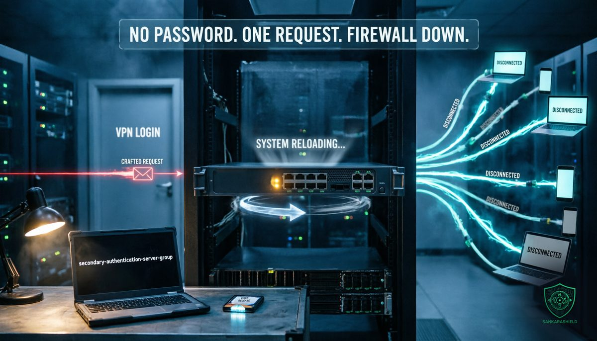

One request, no password: the Cisco firewall zero-day that reboots your VPN.

No stolen credentials. No phishing. No malware. One crafted request to a public login page, and the firewall that carries your remote access reboots.
On Wednesday 28 October, at 19:15 GMT, Cisco published security advisory cisco-sa-asaftd-tunnel-dos-s6mgkb75 for CVE-2026-76418, a vulnerability in the Remote Access SSL VPN feature of Cisco Secure Firewall Adaptive Security Appliance (ASA) Software and Secure Firewall Threat Defense (FTD) Software. It is rated CVSS 8.6, High, and classified as CWE-690.
The advisory is short on drama and clear on the essential point: "In October 2026, the Cisco PSIRT became aware of active exploitation of this vulnerability."
WHAT THE FLAW DOES
AN UNAUTHENTICATED REBOOT — according to Cisco, an unauthenticated, remote attacker can send a crafted request that causes the device to reload unexpectedly. The result is a denial of service.
NO LOGIN REQUIRED — the vulnerable code is reached before any VPN authentication succeeds. The attacker does not need an account, a certificate or a valid password.
THE ROOT CAUSE — Cisco attributes the flaw to logic errors in how the software handles requests when secondary authentication is configured on a tunnel group.
THE IMPACT — Cisco's CVSS vector rates confidentiality and integrity impact as none, and availability impact as high. No data theft and no remote code execution have been reported. The advisory names no attackers and no victims.
WHO FOUND IT — Cisco credits Eric Fernald, who found the issue while resolving a Cisco TAC support case. In other words, it surfaced as a real-world problem before it was understood as a vulnerability.
WHY A REBOOT IS A REAL INCIDENT
"Only" a denial of service is easy to underestimate. On a firewall that terminates remote access, it is not small.
EVERY TUNNEL DROPS AT ONCE — when the device reloads, every active remote access session ends. Remote employees, contractors and administrators lose access at the same moment.
IT CAN BE REPEATED — a single request causes one reload. An attacker who can send it once can send it again as soon as the device comes back, turning a reboot into a sustained outage.
IT CAN HIDE SOMETHING ELSE — a firewall that keeps restarting creates noise, failovers and gaps in logging. That is exactly the kind of distraction attackers use when other activity is under way.
IT HITS THE ONE PATH YOU NEED — if your administrators reach the network through the same VPN, the outage also cuts off the people who should be fixing it.
ARE YOU EXPOSED?
The advisory lists two conditions. Both must be true.
CONDITION 1, SSL VPN ENABLED — the running configuration contains webvpn, with SSL VPN enabled on at least one interface, through a line such as:
webvpn enable <interface_name>
CONDITION 2, SECONDARY AUTHENTICATION ON ANY TUNNEL GROUP — the command secondary-authentication-server-group is configured on any tunnel group, including the built-in DefaultWEBVPNGroup.
THE TRAP — Cisco states that the second condition applies whether or not tunnel-group-list enable is configured. Hiding the group list from users does not remove the exposure if the default group itself uses secondary authentication.
ON FTD — check the remote access VPN policy, and the running configuration it produces, in Secure Firewall Management Center (FMC) or Firewall Device Manager (FDM).
HOW TO CHECK ON ASA — the advisory does not prescribe exact show commands. Reviewing the output of show running-config webvpn and show running-config tunnel-group is a practical starting point. Remember that default values do not always appear in the standard running configuration, so check DefaultWEBVPNGroup explicitly, for example with show running-config all tunnel-group DefaultWEBVPNGroup.
NOT AFFECTED — Cisco confirms that Secure Firewall Management Center Software, Cloud-delivered Firewall, cloud-delivered FMC and Cisco Secure Access are not affected.
FIRST FIXED RELEASES
ASA Software: 9.16.4.104 for 9.16 and earlier, 9.18.4.96 for 9.18, 9.20.4.50 for 9.20, 9.22.3.200 for 9.22, 9.23.1.48 for 9.23, and 9.24.1.27 or 9.24.10.1 for 9.24.
FTD Software: 7.0.11 for 7.0 and earlier, 7.2.13 for 7.2, 7.4.9 for 7.4, 7.6.7 for 7.6, 7.7.14 for 7.7, 10.0.3 for 10.0, and 10.1.1 for 10.1.
If your train is no longer supported, the fixed release may require a migration to a newer train rather than a simple patch. Use the Cisco Software Checker to confirm the right target for each device.
NO WORKAROUND, TWO TEMPORARY MITIGATIONS
Cisco states plainly that there are no workarounds. It does describe two temporary mitigations, and which one applies depends on how DefaultWEBVPNGroup is configured.
CASE 1, THE DEFAULT GROUP DOES NOT USE SECONDARY AUTHENTICATION — in WebVPN configuration mode, run:
no tunnel-group-list enable
The side effect: users no longer choose their connection profile from a list. They must know and enter the correct profile name.
CASE 2, THE DEFAULT GROUP USES SECONDARY AUTHENTICATION — the mitigation Cisco describes is to remove secondary authentication from it:
no secondary-authentication-server-group
The side effect is serious. Removing secondary authentication weakens the security of your remote access VPN, and Cisco says so explicitly. You would be trading an availability risk for an authentication risk. That decision belongs to the security owner, not to whoever is on call at 2 a.m.
Cisco warns that any mitigation may affect functionality, performance or security, should be evaluated in your own environment, and is only a bridge to the upgrade it strongly recommends.
WHAT TO DO THIS WEEK
INVENTORY — list every ASA and FTD device that terminates SSL VPN, with its software train and whether any tunnel group, including the default one, uses secondary authentication.
PATCH BY EXPOSURE — start with internet-facing remote access firewalls that meet both conditions. Plan maintenance windows now: a planned reboot is far better than one chosen by an attacker.
MITIGATE ONLY WITH A DECISION — if you cannot upgrade immediately, choose the mitigation that matches your configuration, document the risk you are accepting, and set a date to remove it.
MONITOR — alert on unexpected reloads, new crash files, failover events, and sudden spikes of VPN session terminations. A series of reboots with no change ticket is a signal, not bad luck.
TEST YOUR FAILOVER — if remote access depends on a single firewall or a single pair, check what happens when both are hit. Know which alternative access path your administrators would use.
PROTECT THE ADMIN PATH — keep out-of-band management for your firewalls, so that the team can still reach them when the VPN is down.
THE PATTERN
Edge VPN appliances have been one of the most targeted pieces of infrastructure for years, across every vendor. Cisco's own advisory history on ASA and FTD includes previous VPN denial-of-service and code execution flaws exploited in the wild.
The reason is structural. A remote access portal must be reachable from the internet, so that employees can connect from anywhere. Everything that runs before authentication is therefore exposed to everyone, including attackers. That pre-authentication surface is where a single flaw does the most damage.
Patching fast is necessary, but it is not a strategy on its own. The longer-term questions are architectural: how much code is exposed before login, whether remote access depends on one device, and whether the access path for administrators is separate from the one users share.
WHAT TO READ WITH CARE
The technical details in this brief come from Cisco's advisory cisco-sa-asaftd-tunnel-dos-s6mgkb75, first published on 28 October 2026, version 1.0: the affected products, the vulnerable conditions, the fixed releases, the mitigations, the exploitation statement and the credit. Coverage by Cybersecurity News on 29 October and The Hacker News summarised the same advisory. Cisco has not published indicators of compromise, the number of affected organisations or the identity of the attackers. The show commands suggested above are practical checks, not commands listed in the advisory.
THE UNCOMFORTABLE PART
This flaw needs no stolen password, no phishing email and no malware. It needs a reachable login page and the right request.
Your VPN portal is on the internet so that your users can reach it. So can everyone else.
So ask the question before someone else answers it for you: when did you last review exactly what your firewall exposes before authentication, and what happens to your business if it reboots every five minutes?